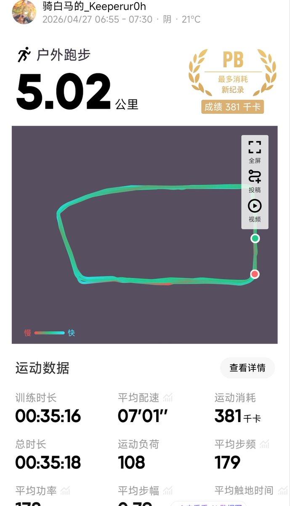
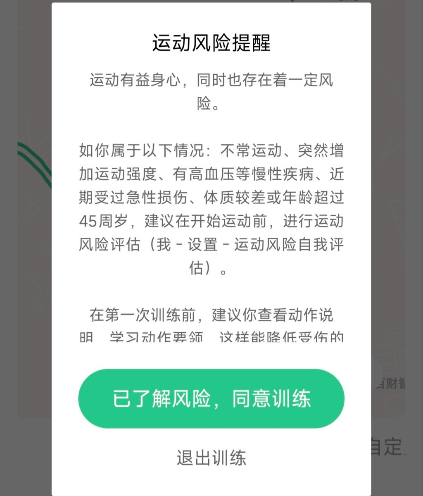
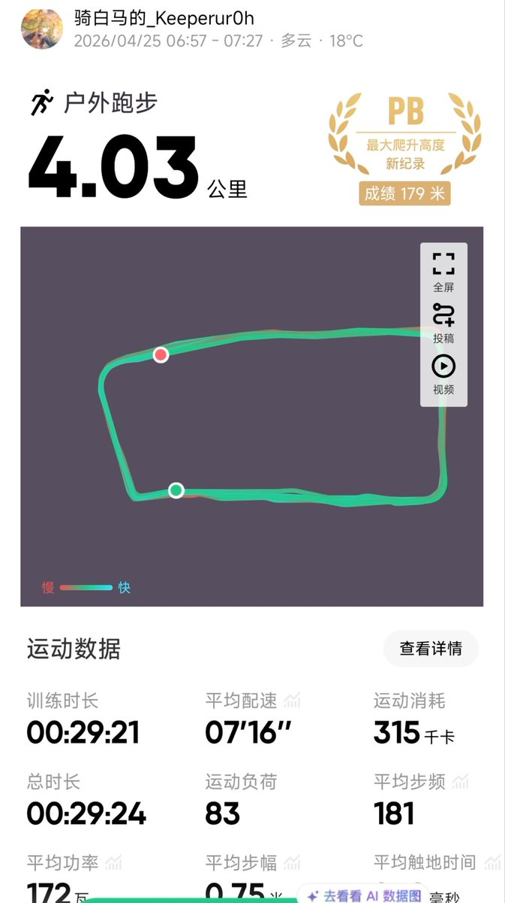
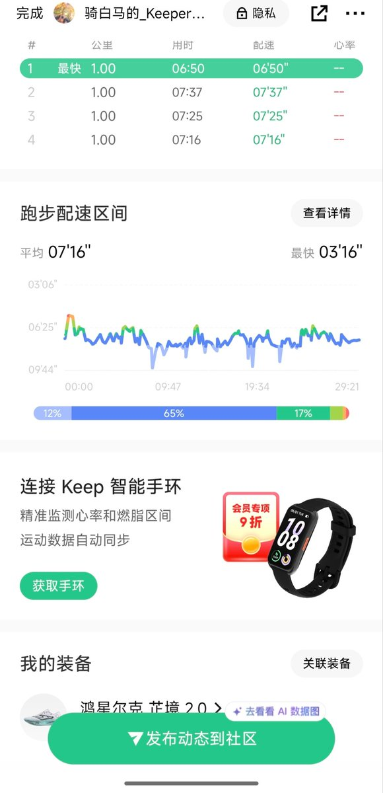

第三天，康复训练，五公里。最后500米略显吃力。不过跑完还是很放松，没有不良反应。Keep这是啥意思看不起我吗😠
雑魚大叔跟了1.4公里就跑不动了，没劲😌

雑魚大叔跟了1.4公里就跑不动了，没劲😌




第二天，康复训练，放慢了速度。
1.5公里大脑开始有点放空，1.8公里双腿微酸，2公里开始脚步有点变重，2-3公里逐渐适应，3公里尚有余力，所以接着跑到了四公里。（其实还能跑）
跑到三公里时日出，沐浴着晨晖，身旁微风有拂过，听着放松的音乐，十分惬意😌 https://t.co/BcEV12EFlS https://t.co/opFLLzQ5Vd
1.5公里大脑开始有点放空，1.8公里双腿微酸，2公里开始脚步有点变重，2-3公里逐渐适应，3公里尚有余力，所以接着跑到了四公里。（其实还能跑）
跑到三公里时日出，沐浴着晨晖，身旁微风有拂过，听着放松的音乐，十分惬意😌 https://t.co/BcEV12EFlS https://t.co/opFLLzQ5Vd